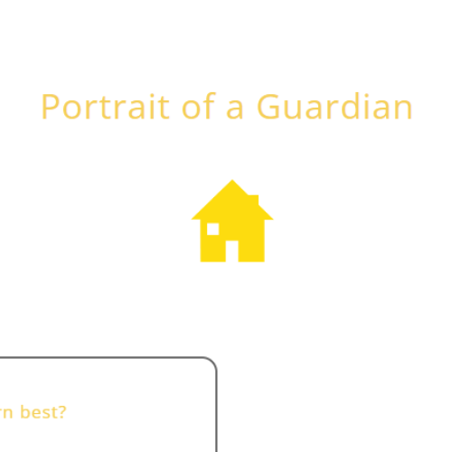

Focused Efforts: When I set my mind on a specific goal, such as achieving a certain grade or mastering a subject, I am more likely to dedicate the time and effort toward that goal. This focus can lead to improved performance in my studies.
Persistence: Even when faced with challenges, my determination helps me to push through obstacles, whether it's difficult coursework or studying for exams.
“When someone shows you who they are, believe them the first time.”
-Maya Angelou
Maya Angelou is my hero as I admire her as a black woman who has provided sound advice through her quotes and poems.I see her as a hero as despite her less than stellar upbringing she response became someone who is a role model for women and someone who made quite the impact in literature,civil rights and culture.The above quote is an example of why she is my hero as this simple quote succintly cautions someone on a person's true character slipping,no matter how short this quote is it leaves an imprint in the mind to be cautious
My Kiersey Test Result
In response to the results of the Kiersey personality test, I am in agreement as it is valid.I agree with the characteristics of being practical,responsible,humble,and cautious however despite my agreement with some of the personality traits there are some traits I do not agree with such as cautious. I believe the reason why the Kiersey trait test assessment is not spot on could be caused by my upbringing and experiences.I am not a naturally cautious person however I sometimes can be cautious around persons it just depends on the situation.The same could be said for someone else.